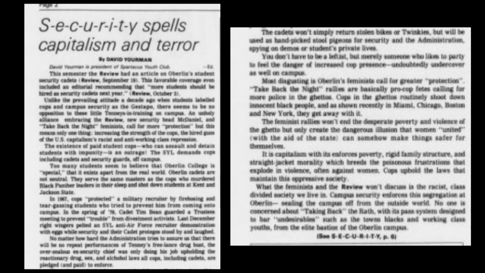

An Imperfect, Inescapable Mediator of Gendered Discourses at Oberlin
The Oberlin Review has been a staple of both Oberlin College and the town of Oberlin at large since its initial publication in 1874. As one of the U.S.’s oldest college newspapers, The Review carries with it an institutional weight and relevance to this day. The Review has long maintained its place within the Oberlin community through the employment of Oberlin students to create and circulate weekly publications. Despite the transient nature of the college’s student body, The Review has endured for close to 150 years, necessarily maintaining a significant degree of operational continuity over time. Throughout its existence, The Review has covered issues spanning from the international to the hyper-local, all grounded within the realities of the Oberlin community. From 1970 through 1989, The Review published roughly 600 editions, each comprised of multiple sections covering topics ranging from sports to international politics to campus life. The publication provides a unique window into life at Oberlin during this time period, as a newspaper created by students and legitimated by ongoing readership from the broader Oberlin community. Considering its established presence, how did The Review function as a space for gender-based concerns– specifically relating to women? Paying particular attention to articles from this time period written on gender related issues, including those affecting students, faculty and custodial workers, a clearer picture of The Review as both an exclusionary and essential outlet for women on campus can be gleaned.
The Review is revealed to be a critical site for gendered discourses on campus, acting both as a platform through which women’s voices and concerns could be amplified, and one in which they were silenced. As a space where gendered discussions were sometimes mediated, The Review allowed women to speak on behalf of their experiences and beliefs, while also giving a voice to the push back that their expressions incurred. Students utilized the letters to the editor section to air their grievances regarding the hostile climate on campus towards women, often directly responding to the perceived sexism from articles published in previous editions of the publication. In this way, the newspaper was used as a crucial space for women to express their own personal struggles, definitively and explicitly marked by their gender, to a broader audience. Further, The Review was both relied on and resisted as an entrenched Oberlin institution. Students used its institutional reach to provide vital information on reproductive health and other areas wherein the college fell short, along with promoting feminist organizations both on campus and internationally. Conversely, many felt as though this institutional power ignored and therefore obscured women’s issues, necessitating the creation of campus alternatives. The Review also featured stories on the experiences of women employed by the college– although sometimes failing to center the voices of the women themselves. In these instances, the publication both spotlighted the gendered experience of these individuals, while reinforcing the devaluation of their existences.
Below are selected articles that provide a sense of both the role that women played as contributors to the college’s newspaper, as well as the general climate of gendered and racialized issues on campus. The articles all reveal the ways in which the Oberlin community processed and publicized these issues through the institution’s central student newspaper. These articles were purposefully chosen with consideration to the ways that they frame these issues, the author’s positionality, the type of rhetoric used regarding the experiences of women at Oberlin, and what is noticeably left unsaid. With this, along with data regarding the gender-breakdown of The Review board, an image of The Review is formed that reveals the ways in which the newspaper was both used and avoided as a space to facilitate discussions of gender on campus.
Reflections on mugging
February 18, 1975; Elaine Schott (Review features editor), “Reflections on mugging and being a woman at Oberlin”: Article on the prevalence of violence against women and the author’s experience following the mugging of two women on campus. The author focuses on the aftermath of a previous attack, in which women started to search for “male escorts before any night journey.” Here, Schott inserts her own contradicting feelings regarding such a response being a “perpetuation of the problem”, which she identifies as gender roles. Schott works through her feelings of fear and frustration following a spate of violent attacks against women at Oberlin. Using The Review both as a platform to inform the community on the violence, as well as one through which her personal struggle can be heard. The article consists of her grappling with the reality that gender roles play in the victimization of women and the subjugation of the feminine. Schott declares that, “Being a woman and being a victim go together”.
Weight training
April 10, 1987; Liz Olson (Review Feature Editor), “Women discover virtues of weight training”; Article on the increasing popularity of weight lifting amongst women at Oberlin, and the initiatives on campus to build community for women who lift. Olson’s article focuses on the reasons why many women who previously used “Nautilus machines'' decided to switch to free weights to “increase their strength, reshape their bodies, or to improve performance in their primary sport”. This reasoning is expanded by student Ginny Kunch, who brings in the creative reasons behind the switch, arguing that, “there’s nothing particularly… cerebral about [exercise machines]”. Kunch then describes the difference in the types of sport that men and women are encouraged to participate in as children, and how women are often relegated to those that are “less powerful, more graceful”, and therefore discouraged from weight training. Olson goes on to a conversation with student Rebecca Plaut, who describes the intimidation that women experience with the male-dominated activity of weight lifting, referencing numerous women who “walk in the free weight room, look around, and walk out without even touching a weight”. From here, the article shifts its focus onto Rebecca Plaut’s ExCo course, “Beginning Strength Training for Women”, along with her desire to create “group support” for women on campus who lift. The Review, again, serves as a platform to convey women’s activities on campus, putting a spotlight on efforts by women students to create more positive spaces for their peers.
Woman security officer
October 16, 1973; Roseann Moye, “Security hires woman officer”: Article on the hiring of the first woman security officer, Ruth Ann Ferdnance, at Oberlin. Described by its author as “another breakthrough for Oberlin women '', the article necessarily ties the experience of women hired by the college to those of women enrolled, forging a notion of solidarity between the women of the Oberlin community, regardless of their positionality to the college. This framing is complicated later on in the article, when Oberlin College security chief Bob Palmer is referenced saying, “the fact that [Ferdnance] is a woman did not influence his decision in any way”. The article ends with Ferdnance’s own thoughts regarding her employment, and her feeling that “she has not encountered any difficult situations stemming from her unique position as the first woman on the security force”. The language of “unique position” further reveals the ways in which the author sought to emphasize the significance of Ferdnance’s gender, even if Ferdnance herself did not characterize her experience in the same way. The article omits references to the racialized aspect of Ferdnance’s employment as a woman of color. Without the picture of Ferdnance accompanying the article, there would be no clear indication of Ferdnance’s positionality as a black woman in a job entirely occupied by men. Through The Review, the gendered significance of Ferdnance’s employment is made clear to the Oberlin community.
Coming Out
(4) February 15, 1974; Tema Okun, “Okum defends Coming Out”: Letter to the editor. In response to “hostile” article published in a previous edition of The Review by student Alan Gandelman on the failures of student-run feminist magazine Coming Out. Okun describes Coming Out as the work of “College women who were fed up with The Review’s ignorance and disinterest of women’s issues on the campus”, before calling out Gandelman for his “hostile and vindictive tone of criticism that indicates [his] ignorance of Coming Out’s background”. The article ends with the author’s assertion that Gandelman “manifests a brand of male arrogance commonly found on this campus and as far as [Okun] is concerned, he can shove it”. Okun’s article serves as a scathing rebuke of both Gandelman as well as The Review (of which Gandelman was on the editorial board), for their “ignorance and disinterest” regarding women's issues and groups on campus. Okun’s article reveals that strong feelings regarding The Review’s inadequate and infrequent treatment of women’s issues at Oberlin were relatively widespread. The magazine, Coming Out, served as an attempt to create an alternative campus publication, forged in direct opposition to The Review. The article is followed by a brief note from The Review’s editorial board, in which they dispute Okun’s labeling of Gandelman’s article as an editorial piece, instead claiming that it fell in the newspaper’s commentary section. The note then ends with a lukewarm assertion that Gandelman’s article “does not necessarily reflect the views of The Review editorial board”.
Gandelman's article
Hiring goals
May 28, 1982: Ben Stocking, “Hiring goals prove difficult to achieve”; Article on the lack of gender and racial diversity among faculty. Stocking begins the article by noting that, “not one black woman holds a continuing faculty position in the College of Arts and Sciences”, and that with the College and the Conservatory combined, minorities make up only 6% of the faculty. He launches an interrogation of these vast disparities through conversations with Oberlin administrators and faculty, who he describes as being mostly in agreement regarding the “costs” of underrepresentation. He quotes Professor Frances Walker, a woman of color who served as the Chairperson of the Special Educational Opportunities Program Commission, when she reflected on the experience and says, “Sometimes [male colleagues] would talk as though I wasn’t even there. I’d say something and they’d act as though they hadn’t even heard it”. Stocking notes that, “of the College’s 24 departments and program, 17 have no minority representation and eight are without women. Only seven departments have more than two women members”. In a quote from the Chairperson of the History Department, Robert Neil, Stocking reveals the ways in which such disparities were justified, stating, “I think we have lots of women here. We do have few minorities, but that’s just because there aren’t many minorities on the market– at least not of Oberlin quality”. Ending with a complicated picture of the college’s Affirmative Action policy, Stocking uses The Review to produce a comprehensive examination of the college’s failure to hire faculty from a wide range of ethnic backgrounds and genders. In this instance, The Review served to amplify the voices and experiences of female faculty.
Wages for housework
March 2, 1976; Cindy Eyester and Susie Linfield, “Work is all in a woman’s day!”: Article sponsored by two members of the “Wages for Housework Group” at Oberlin. Advocating for government sponsored wages for the domestic, emotional and sexual labor that women perform for men everyday. The main thrust of their argument is that women’s economic dependence on men has resulted in the collapsing of their identities into the work that they perform. Eyester and Linfield describe how women must “subordinate [their] own needs” as they are “constantly servicing others”. The end of the article brings the conversation to the Oberlin campus, and specifically the dynamic between the overwhelmingly male College faculty, and female students. They write, “here at Oberlin, women students are expected to be intellectual and aggressive, but we also know that male students and professors are judging us on the basis of our sexual attractiveness. It’s hard to refuse housework when we are all defined as housewives.”The Review served as a platform for WHG, allowing Eyester and Linfield to reach Oberlin College and community with a message that was at once pointed and universal.
Sexual health resources
November 25, 1975; Sarah Whitaker, “Bridging the sex info gap”; Article on the lack of sexual heath resources on campus due to understaffing at the Oberlin Clinic. Provides information on birth control and contraceptive options, along with broader facets of reproductive health from the perspective of the SIC (the student-run and funded Sexual Information Center). Whitaker responds to the sentiment expressed by many Oberlin students who felt “‘herded through”’ the college’s sexual health clinic, recieving inadequate assistance regarding contraceptives and informations on abortion resources. She writes the article following the college’s response to inadequate sexual health resources with a claim that the issue is “being looked into”, which Whitaker intimates is an attempt by the college at placating the student body. Whitaker urges readers to visit the SIC for information and resources specifically regarding abortion access, birth control (such as the IUD, the pill, and the diaphragm) and the purpose of pelvic examinations. With this, Whitaker is using The Review’s institutional reach to communicate crucial information to women on campus and in the community, where the College has consistently failed them in the area of reproductive health.
Racism at Breast Fest
April 29, 1988; Christine M. Lee, Marci Bounds, Indira Mahajan: Letter to the editor. Three black women responding to racism within the white feminist community on campus, focusing mainly on the racism embedded in the annual event, “Breast Fest”, and its lack of historical awareness/care. In a letter criticizing the implicit link between “good” feminism and whiteness at Oberlin, the three women speak to America’s history of “gross sexual exploitation of black women as well as the perpetual lynching of black men for sexual crimes against white women”. They then connect this with “Breast Fest”, a day in which women are encouraged to go topless on campus, argueing that the event promotes a form of empowering feminism unique to white women, as “a half-naked white woman may be liberated, a black woman with no shirt on is a whore”. The authors go on to address the historic weaponization of the white woman’s body against black men in America, arguing that the nudity of their white peers creates a historically unsafe (and life-endangering) situation for black men on campus who could be accused of “‘reckless eye-balling”. The letter then contests the very premise of “Breast Fest”, as they argue “for [black women], reclaiming our bodies does not mean shedding our clothes, but being able to keep ourselves covered”. The author’s end with critical commentary on what true liberation for all women does and doesn’t look like. The Review appears to have been the institutional outlet through which these students of color could express their frustration to a broad audience, many of whom contributed to the racist culture embedded in the white feminism on campus.
Law and order feminists?

November 4, 1980; David Yourman, “S-e-c-u-r-i-t-y spells capitalism and terror”: Article pushing back against the demands of the “law-and-order feminists” sponsering the “Take Back the Night” rally against gender based sexual violence, on the grounds of their calling for a strengthening of the police presence on campus. In response to an early article published in The Review supporting students becoming ‘security cadets’, Yourman accuses The Review of allying with the new head of campus security. Yourman speaks out against this program (wherein select Oberlin students would become “paid student cops”) under the characterization of the police as “the hired guns of U.S. capitalism’s racist and anti-working class repression”. His focus then shifts to “most disgusting”, being “Oberlin’s feminist’s calls for “greater protection”, along with the “historically pro-cop nature of the Take Back the Night” movement (dedicated to the ending of sexual violence). Yourman then explicitly links the feminist community at Oberlin with The Review stating, “what the feminists and The Review won’t discuss is the racist, class divided society we live in”. He further links the two groups in his declaration that they are not Marxist organizations, and ends his article with the assertion that, “there is no solution to rape and violent crime short of socialist revolution”.
Socialism is not a cure
November 14, 1980; Jenni Kandler and Tracey Scherzer, “Socialism is not a cure”: Letter in response to David Yourman’s article “S-e-c-u-r-i-t-y spells capitalism and terror”, published in the previous edition. Criticizing the previous letter for its mischaracterization of the mission of the “Take Back the Night'' rally as one meant only to “increase the strength of cops”. The letter sharply criticizes Yourman’s argument on multiple grounds, ultimately concluding that he posits an “extremely simplistic view of the causes of women’s oppression”. They write of the healing and essential potential of ‘Women Unite, Take Back the Night’ to allow women to “realize that sexual harassment is by no means an individual occurrence”, while demanding that everyone acknowledge that “women’s fear is legitimate”. To Yourman’s accusations of their pro-capitalist ideologies, they assert that, “overthrowing capitalism alone will not change the ideology behind sexual harassment. The dehumanization and subordination of women is ingrained in us so deeply“. Kandler and Scherzer conclude by asserting that, “All of us, including David Yourman, need to confront the complexity of the situation”. The letters to the editor section of The Review entirely facilitated this charged back and forth, enabling both sides to engage on the same platform.
Sexism toward maids
December 12, 1975; Rob Tiller, “College acts to cut sexism for maids”: Article on the wage gap between gendered custodial positions on campus. Under the heading, “Federal scrutiny feared”, Tiller’s article addresses the concerns among the administration regarding the division of custodial labor falling on gendered lines, with higher wages for the position mostly occupied by men. The fear of violating the Equal Pay Act of 1963, Tiller writes, comes as a result of the “increase in crackdowns recently on violators of the law”. As a result, the administration chose to allow female custodians to apply for a reclassification into the higher paid, and “more strenuous” custodial position. This article provides an account of the gender based wage gap at Oberlin almost entirely through the lens of the administration, with the women’s opinions conveyed through an interview conducted with Richard Dahl, the associate dean of students of housing and dining. Tiller, managing editor of The Review at the time, writes from a distinct perspective, crafting a piece on gender much closer to that of the male administrators than that of the workers.
Against wages for housework
November 11, 1975; Jeff Borns, “Fleming: ‘misguided’ leadership”: Letter to the editor. Following a talk given by Suzanne Fleming advocating for wages for women’s unpaid domestic labor. Borns begins with claims of sexism against men present in the campus discussion, before moving into his analysis regarding the validity of the event’s content. He breaks down his complaints under the sections Sexism, Unrealistic, and Appalling. Under Sexism, Born writes of the unfair discrimination against men in the Q&A portion of the lecture, in which “the chairperson called on men only as a last resort”. This, Born writes, undermined “[the feminist’s] most important objective– to convince the men of the validity of their movement”. Under Unrealistic, Born describes the infeasibility of Fleming’s (and the feminist movement’s) demands regarding their advocacy for the financial compensation of domestic work for women from the government. Appalling concludes with Borns’ broader critique of the feminist movement, despite his assurances such as “women I am on your side!” and “I’m for the ends (the broader goals of feminism), but not the means (financial compensation for domestic labor)”. He denounces the notion that women work harder than men to “cheer up” and “look good for” their partners. With this article, The Review was seen as the platform through which students seeking to push back against the aims of feminist groups on campus could make their voices heard.
The abortion debate
April 14, 1989; Michael Millin, Jennifer Mezey, “The abortion debate: fighting for lives”; two Oberlin students’ opinions on abortion rights. 16 years after the passage of Roe V. Wade. Following the April 9, 1989 protest in the U.S. capitol against abortion restrictions, The Review dedicated a section of that week’s paper to reporting on, and discussions about, abortion rights. This debate between two students with opposing views on whether or not abortions should be legal came at the end of the section. The first opinion by Michael Millin, entitled “Murder of Innocent Life”, argues a staunchly anti-abortion message which begins with comparisons to the Holocaust. He goes on to argue against abortion on the basis that, “as soon as a sperm cell fuses with an egg cell, a human life is created”. He follows this with an assertion that, at the core of the abortion issue, is a lack of responsibility, as “if a woman were to become pregnant, it would be her responsibility to protect the human life which she has just had a part in creating”. Millin characterizes the landmark Roe V. Wade Supreme Court decision as one that, “condoned the murder of innocent human life”. The second opinion by Jennifer Mezey, entitled “Right to privacy, choice”, stands on the other side of the issue, presenting an argument for the right to abortion based on one of choice and safety. Mezey begins by declaring that she herself attended the pro-abortion march in Washington D.C., and that the overturning of Roe won’t eliminate abortions, but rather force women to “give birth to children they do not want, or they will die after unsafe abortions from back-alley butchers”. She goes on to point out the hypocrisy of pro-lifers regarding the accusations of immorality, as the real immorality, she posits, is a group of men who “believe they have the right to inflict their moral judgment on [her own] body”. She then disputes the claim that being pro-choice equates to being pro-abortion, grounding her argument entirely in an individual’s right to choose. She focuses the majority of her writing on the obstacles facing abortion acticisrs and women for the future, before ensuring that “we will not stand for a return to pre-Roe days”. This debate reveals The Review being used as a platform upon which critical conversations take place. The letters are joined by a column with alternating quotes of their own statements. Here, the newspaper becomes both a mediator and a platform for advocacy on abortion rights.